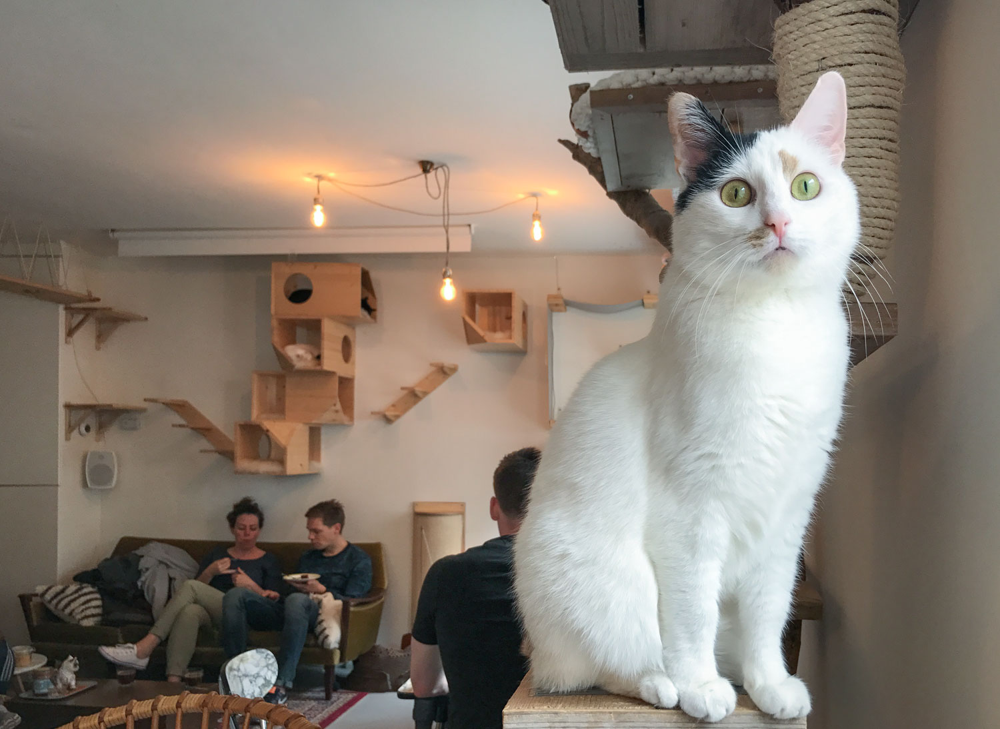

Kocia kawiarnia w Amsterdamie
Kattencafe Kopjes, czyli kocia kawiarnia
Kattencafe Kopjes leży w zachodniej dzielnicy Amsterdamu, 10 minut rowerem od Muzeum Van Gogha. Oczywiście najłatwiej, wzorem lokalsów, dotrzeć tu jednośladem. Kawiarenka jest mała i z zewnątrz niepozorna, może pomieścić do 20 gości. Okupuje ją – to chyba najlepsze określenie na zajęcia, jakim się oddają – siedem kotów. Została otwarta w 2015 roku w modelu crowdfundingowym – zrzuciło się na nią prawie tysiąc kociar i kociarzy.
Rezerwacja i opłaty
Szczególnie jeśli do kawiarni wybieracie się w weekend lub w godzinach popołudniowych, wizytę najlepiej zarezerwować parę dni wcześniej.. Wstęp kosztuje 3 euro i umożliwia spędzenie dwóch godzin w kocim królestwie. Do tego dochodzi oczywiście koszt zamówionych napojów i dań, ale ceny są standardowe. W KK obowiązuje płatność wyłącznie kartą (co jest często spotykaną praktyką w Amsterdamie), ale lepiej się nie zdziwić przy wyjściu ;)
Zasady
Odwiedzając kocią kawiarnię trzeba dostosować się do reguł tutaj panujących. Do najważniejszych należą: dezynfekcja rąk przed wejściem oraz zakaz karmienia, budzenia i podnoszenia kotów. Jeśli planujecie odwiedziny z dziećmi, bieganie i krzyki nie będą akceptowane, więc warto je wcześniej na to przygotować. Można bawić się ze zwierzakami, głaskać je (jeśli wyrażają aprobatę) i robić zdjęcia – bez lampy błyskowej. Polecam też patrzeć pod nogi ;)
Atmosfera
W kawiarni panuje niesamowicie przyjemna atmosfera, co bez wątpienia jest zasługą kotów. Ludzie są mili, zrelaksowani i uśmiechają się do siebie porozumiewawczo. Podczas mojej wizyty większość stanowiły pary, które widocznie tak jak ja nie wyobrażają sobie lepszego miejsca na randkę ;) Wewnątrz nie jest specjalnie cicho, plumka muzyka, słychać hałasy dobiegające z kuchni i rozmowy, ale koty w znakomitej większości śpią jak zabite i nie przejmują się obecnością gości. Widać też fajny kontakt obsługi ze zwierzakami, które rozpoznają „swoich” i domagają się od nich specjalnych czułości.